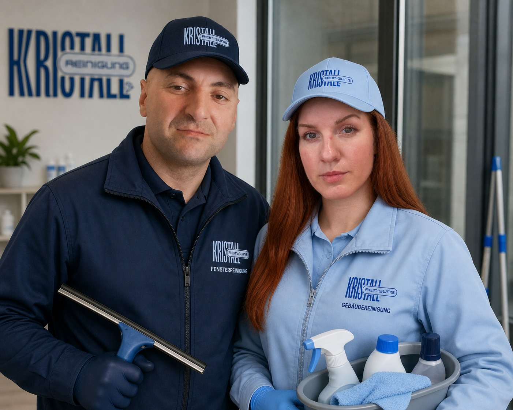

Glänzende Sauberkeit ist ein Muss.
Willkommen bei Kristall Reinigung – Ihrem vertrauenswürdigen Partner für professionelle Reinigung in Wesel und Umgebung. Wir sind ein Familienunternehmen, das seit 2021 kompromisslos für Glanz und Zuverlässigkeit steht.
Unser Erfahrungsspektrum und Anspruch
Breite Expertise: Seit unserer Gründung haben wir umfangreiche Erfahrung in allen Reinigungsbereichen gesammelt. Wir reinigen Privathaushalte, Wohnungen, Büros, Praxen, Treppenhäuser, Gemeinschaftsräume und übernehmen auch Spezialreinigungen nach Bauarbeiten.
Spezialisten für Glas: Wir sind Ihre Experten für glasklare Ergebnisse. Dazu gehören Fenster, Wintergärten und Glasflächen aller Art, damit das Licht ungehindert in Ihre Räume strömt.
Moderne Technik und Qualität: Wir setzen auf hochwertige, umweltschonende Reinigungsmittel und modernes Equipment, einschließlich professioneller Dampfreiniger. Das sorgt für Sauberkeit und Hygiene bis ins Detail.
Lokale Verbundenheit: Als lokales Unternehmen kennen wir die Bedürfnisse unserer Kunden in Wesel und Umgebung. Wir arbeiten flexibel, zuverlässig und persönlich.
100% Zufriedenheitsgarantie: Wir sind erst zufrieden, wenn Sie es sind. Sollte einmal etwas nicht passen, korrigieren wir es kostenlos und umgehend.
